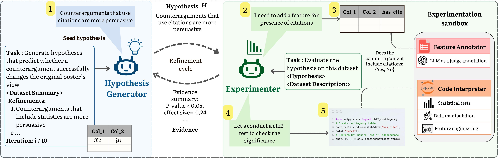

Accelerating Social Science Research via Agentic Hypothesization and Experimentation
Get in touch with us at behavior-in-the-wild@googlegroups.com
- Introducing ExperiGen — the first agentic AI framework that closes the loop between hypothesis generation and experimental validation over raw, unstructured data, automating a key part of the scientific discovery cycle.
- Bayesian-Inspired Discovery Loop — ExperiGen uses a novel two-phase search where a Generator agent proposes testable hypotheses and an Experimenter agent evaluates them statistically with iterative refinement, yielding more reliable discoveries.
- Stronger, More Actionable Findings — Across diverse domains, ExperiGen discovers 2–4x more statistically significant hypotheses that are 7–17% more predictive than prior methods, and its outputs are shown to be novel, impactful, and intervention-ready in real A/B tests.

Abstract
Data-driven social science research is inherently slow, relying on iterative cycles of observation, hypothesis generation, and experimental validation. While recent data-driven methods promise to accelerate parts of this process, they largely fail to support end-to-end scientific discovery. To address this gap, we introduce EXPERIGEN, an agentic framework that operationalizes end-to-end discovery through a Bayesian optimization inspired two-phase search, in which a Generator proposes candidate hypotheses and an Experimenter evaluates them empirically. Across multiple domains, EXPERIGEN consistently discovers 2–4× more statistically significant hypotheses that are 7–17 percent more predictive than prior approaches, and naturally extends to complex data regimes including multimodal and relational datasets. Beyond statistical performance, hypotheses must be novel, empirically grounded, and actionable to drive real scientific progress. To evaluate these qualities, we conduct an expert review of machine-generated hypotheses, collecting feedback from senior faculty. Among 25 reviewed hypotheses, 88 percent were rated moderately or strongly novel, 70 percent were deemed impactful and worth pursuing, and most demonstrated rigor comparable to senior graduate-level research. Finally, recognizing that ultimate validation requires real-world evidence, we conduct the first A/B test of LLM-generated hypotheses, observing statistically significant results with p less than 10-6 and a large effect size of 344 percent.
Key Results
Number of statistically significant hypotheses (p < 0.05, Bonferroni-corrected) using GPT-4o
| Method | HypoBench | Cross-Domain | ||||||||
|---|---|---|---|---|---|---|---|---|---|---|
| Decep. | News | Dread. | GPTgc | Pers. | Design | LaMem | Cong. | CMV | ||
| ExperiGen Ours | 18 | 21 | 16 | 14 | 17 | 19 | 11 | 5 | 20 | 16 |
| HypoGenic | 6 | 3 | 4 | 3 | 5 | 3 | 4 | 0 | 5 | 4 |
| HypotheSAEs | 8 | 12 | 6 | 5 | 7 | 12 | 6 | 0 | 12 | 8 |
ExperiGen discovers 2–4x more significant hypotheses than baselines. On LaMem, ExperiGen is the only method to discover any significant hypotheses. See full results in the paper →
Predictive accuracy (%) on representative benchmarks using GPT-4o
| Method | HypoBench | Cross-Domain | |||||
|---|---|---|---|---|---|---|---|
| Deception | News | Persuasion | Design | Congress | CMV | ||
| ExperiGen Ours | 78.0 | 70.0 | 94.0 | 67.0 | 88.0 | 79.4 | 77.5 |
| HypoGenic | 76.0 | 63.2 | 93.0 | 60.3 | 84.3 | 72.6 | 61.0 |
| HypotheSAEs | 62.9 | 61.9 | 87.1 | 54.1 | 84.3 | 73.9 | 59.2 |
| 0-shot CoT | 65.0 | 68.2 | 83.2 | 60.5 | 84.8 | 73.7 | 65.0 |
| Few-shot CoT | 64.8 | 67.2 | 81.0 | 58.6 | 84.6 | 72.6 | 69.0 |
In-domain predictive accuracy (%) with GPT-4o on select benchmarks spanning social media, news, psychology, design, and persuasion. ExperiGen discovers 2–4x more statistically significant hypotheses that are 7–17% more predictive. See full results in the paper →
Examples
Representative hypotheses generated by ExperiGen across diverse domains, along with supporting evidence from the datasets.
News Headlines Popularity HypoBench
Hypothesis: Headlines using a cause-effect structure (e.g., starting with "Why") are more engaging, as they promise a clear causal explanation.
Hypothesis: Headlines that include curiosity-inducing keywords (e.g., 'secret', 'never told', 'shocking') are more likely to be the winning headline, as they trigger the reader's curiosity.
Dreaddit — Stress Detection HypoBench
Hypothesis: Posts that exhibit a higher frequency of negated solution descriptors (e.g., "can't fix", "don't know how", "won't help") are more likely to express elevated stress.
Twitter Image Engagement Cross-Domain
Hypothesis: Tweets that include high-resolution images are more likely to receive higher engagement in terms of likes compared to tweets with lower resolution images.
Layout Design Cross-Domain
Hypothesis: Layouts with balanced spacing and margins are more likely to be preferred compared to layouts with unbalanced spacing and margins.
Memorability Cross-Domain
Hypothesis: Higher relative color contrast significantly predicts image preference, with the higher-contrast image being consistently more memorable.
Form Conversion Cross-Domain
Hypothesis: Signup Forms with a soft shadow have higher conversions.
BibTeX
@article{experigen2025,
title={Accelerating Social Science Research via Agentic Hypothesization and Experimentation},
author={Jishu Sen Gupta and SI Harini and Somesh Singh and Syed Mohamad Tawseeq and Yaman K Singla and David Doermann and Rajiv Ratn Shah and Balaji Krishnamurthy},
year={2026},
journal={arXiv preprint arXiv:2602.07983}
}Terms Of Service
Users are required to agree to the following terms before using the service. The service is a research preview. It only provides limited safety measures and may generate offensive content. It must not be used for any illegal, harmful, violent, racist, or sexual purposes. Please do not upload any private information. The service collects user dialogue data, including both text and images, and reserves the right to distribute it under a Creative Commons Attribution (CC-BY) or a similar license.
Acknowledgement
We thank Adobe for their generous sponsorship.